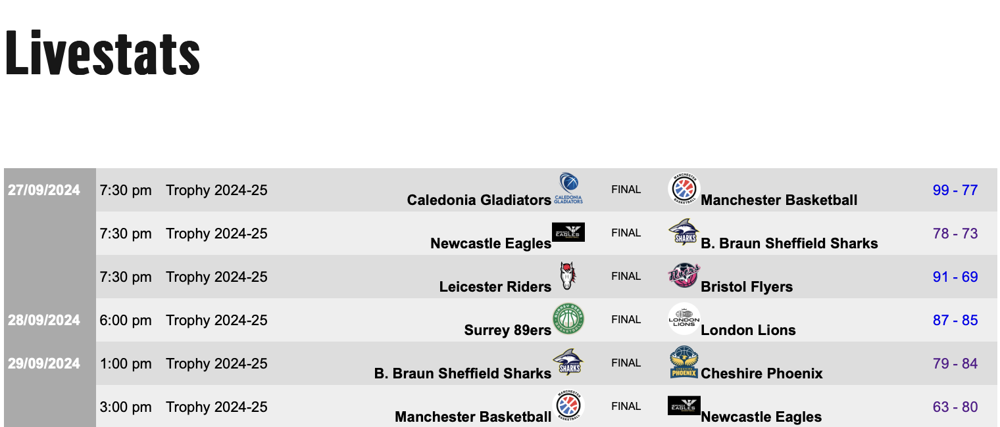

Scraping Javascript heavy websites#
Unlike BritHoops, some websites make extensive use of Javascript for additional functionality, making it difficult to use the “requests” library to extract the data we want.
In this Chapter, our aim is to extract the results of the games played this far in the Men’s SLB, which can be found on the livestats page. Once we have the data we want, we will process it and produce a table of the results from the Trophy competition.
Here’s a cropped screenshot of the livestats page so that you can see what it looks like:

As you can see, this data is almost certainly found in a table somewhere within the HTML.
Accessing the correct HTML data#
As a first attempt we can try scraping the HTML from livestats with requests and Beautiful Soup, in much the same way as we did for our First Foray into Data Scraping.
import requests
from bs4 import BeautifulSoup
Due to the way that the livestats page serves up its HTML, we need to pass an extra option to requests too - this means it will ignore any untrusted SSL certificates. This is a minor security risk, so should be avoided where possible and you are likely to recieve a Python warning when running it.
livestats_url = 'https://www.superleaguebasketballm.co.uk/livestats/'
page = requests.get(livestats_url, verify=False)
soup = BeautifulSoup(page.content)
/Users/ch1jgh/miniforge3/envs/bball-analytics/lib/python3.12/site-packages/urllib3/connectionpool.py:1099: InsecureRequestWarning: Unverified HTTPS request is being made to host 'www.superleaguebasketballm.co.uk'. Adding certificate verification is strongly advised. See: https://urllib3.readthedocs.io/en/latest/advanced-usage.html#tls-warnings
warnings.warn(
If you save the HTML soup to a file and inspect it, you’ll see it is much more complex that what we saw with BritHoops. We can persist with this and try to extract any HTML tables from the soup.
tables = soup.find_all('table')
len(tables)
0
Hmm, it appears that are no HTML tables available in the soup we scraped. One of the reasons for this is that the webpage is using iframes, which makes grabbing the data more difficult as it’s effectively a webpage within a webpage.
We are going to change our approach here and automate the use of a web browser to extract the information we want. The selenium Python package allows us to do this with a variety of browsers, but I am going to use the Google Chrome browser, along with the Chrome for testing program.
The next code cell imports what we need from selenium, asks it to use the Chrome browser, opens the livestats URL (a Chrome window should pop up if you run this code), switches to the second iframe on the webpage, scrapes the HTML from said iframe, then closes the broswer window.
from selenium import webdriver
driver = webdriver.Chrome()
page = driver.get(livestats_url)
driver.switch_to.frame(1)
results_soup = BeautifulSoup(driver.page_source, 'html')
driver.close()
Let’s try extracting any HTML tables again, and see how many we get.
tables = results_soup.find_all('table')
len(tables)
1
Excellent! We’ve managed to extract a table this time. To check it contains the information we want, we can extract the first row from the table and see what it look like.
tables[0].find('tr')
<tr class="sp_lsmatch finished spmatcheven"><td class="sp_dtfield"> 27/09/2024 </td><td class="sp_tmfield">7:30 pm</td><td>Trophy 2024-25</td><td class="spteam1 tid178239"><span class="team1name">Caledonia Gladiators</span><span class="logo"><img src="https://images.statsengine.playbyplay.api.geniussports.com/706553f85ba846cfbcae48cf69f1c316T1.png"/></span></td><td class="sp_status">Final</td><td class="spteam2 tid178234"><span class="logo"><img src="https://images.statsengine.playbyplay.api.geniussports.com/516edf4c0fb58d77097883a0cf4966c3T1.png"/></span><span class="team1name">Manchester Basketball</span></td><td class="spscore"><a href="http://www.fibalivestats.com/webcast/SLB/2523184/" style="text-decoration:none;" target="_blank">99 - 77</a></td></tr>
This definitely contains what we want - it’s the result of the Gladiators vs Manchester game from 27th Sept 2024 (Glads won 99-77).
Extracting the information we want from the HTML#
The information we want is held in the object above, but to hold the information we will need to construct a table we can create some Python dictionaries to contain the numbers of wins and losses, and the points for and against.
wins = {"B. Braun Sheffield Sharks": 0, "Bristol Flyers": 0, "Caledonia Gladiators": 0, "Cheshire Phoenix": 0,
"Leicester Riders": 0, "London Lions": 0, "Manchester Basketball": 0, "Newcastle Eagles": 0, "Surrey 89ers": 0}
losses = {"B. Braun Sheffield Sharks": 0, "Bristol Flyers": 0, "Caledonia Gladiators": 0, "Cheshire Phoenix": 0,
"Leicester Riders": 0, "London Lions": 0, "Manchester Basketball": 0, "Newcastle Eagles": 0, "Surrey 89ers": 0}
points_for = {"B. Braun Sheffield Sharks": 0, "Bristol Flyers": 0, "Caledonia Gladiators": 0, "Cheshire Phoenix": 0,
"Leicester Riders": 0, "London Lions": 0, "Manchester Basketball": 0, "Newcastle Eagles": 0, "Surrey 89ers": 0}
points_allowed = {"B. Braun Sheffield Sharks": 0, "Bristol Flyers": 0, "Caledonia Gladiators": 0, "Cheshire Phoenix": 0,
"Leicester Riders": 0, "London Lions": 0, "Manchester Basketball": 0, "Newcastle Eagles": 0, "Surrey 89ers": 0}
Next we will extract all of the table rows, and define a string that we will use to filter only the Trophy results from the full set of games.
results_rows = tables[0].find_all('tr')
trophy_string = "Trophy 2024-25"
Now it is time to extract and process the results into the dictionary. To do that, we will loop over all of the table rows, check if it was a Trophy game, and grab the information we want.
for entry in results_rows:
row_cells = entry.findAll('td')
if row_cells[2].get_text() == trophy_string:
home_team = row_cells[3].get_text()
away_team = row_cells[5].get_text()
score = row_cells[6].get_text()
if score != "Upcoming":
score = score.split(" - ")
home_allowed = int(score[1])
away_allowed = int(score[0])
home_for = away_allowed
away_for = home_allowed
points_allowed[home_team] = points_allowed[home_team] + home_allowed
points_allowed[away_team] = points_allowed[away_team] + away_allowed
points_for[home_team] = points_for[home_team] + home_for
points_for[away_team] = points_for[away_team] + away_for
if home_for > away_for:
# Home team won
wins[home_team] = wins[home_team] + 1
losses[away_team] = losses[away_team] + 1
else:
losses[home_team] = losses[home_team] + 1
wins[away_team] = wins[away_team] + 1
Let’s have a quick peek inside the “wins” dictionary to check if we have something sensible.
wins
{'B. Braun Sheffield Sharks': 4,
'Bristol Flyers': 3,
'Caledonia Gladiators': 2,
'Cheshire Phoenix': 6,
'Leicester Riders': 5,
'London Lions': 2,
'Manchester Basketball': 0,
'Newcastle Eagles': 5,
'Surrey 89ers': 1}
Now that we’ve got the data, it’s time to place it into lists and create a dataframe. Let’s start by importing pandas.
import pandas as pd
Then the lists and dataframe
teams = list(wins.keys())
standings_df = pd.DataFrame()
standings_df["Team"] = teams
wins_list = list(wins.values())
losses_list = list(losses.values())
points_for_list = list(points_for.values())
points_allowed_list = list(points_allowed.values())
standings_df["W"], standings_df["L"], standings_df["PPG"], standings_df["OPPG"] = [wins_list, losses_list, points_for_list,
points_allowed_list]
We can take a look at the information that’s gone into the dataframe.
standings_df
| Team | W | L | PPG | OPPG | |
|---|---|---|---|---|---|
| 0 | B. Braun Sheffield Sharks | 4 | 3 | 603 | 578 |
| 1 | Bristol Flyers | 3 | 3 | 521 | 505 |
| 2 | Caledonia Gladiators | 2 | 5 | 573 | 601 |
| 3 | Cheshire Phoenix | 6 | 1 | 664 | 570 |
| 4 | Leicester Riders | 5 | 0 | 461 | 387 |
| 5 | London Lions | 2 | 3 | 393 | 418 |
| 6 | Manchester Basketball | 0 | 6 | 468 | 564 |
| 7 | Newcastle Eagles | 5 | 2 | 557 | 552 |
| 8 | Surrey 89ers | 1 | 5 | 455 | 520 |
Create a table based on the results#
Use the information from the dataframe to calculate some new columns: number of games played (GP), the difference in points scored/points allowed (Diff), a number of points based on 2 points for a win (fictional for the Trophy competition), and a percentage of games won (Win%).
standings_df["GP"] = standings_df["W"] + standings_df["L"]
standings_df["Diff"] = standings_df["PPG"] - standings_df["OPPG"]
standings_df["Pts"] = standings_df["W"] * 2
standings_df["Win%"] = standings_df["W"] / standings_df["GP"]
The NBA often use a “games back” (GB) column in their standings tables, so we can define a series of functions to calculate it.
def w_games_behind(wins, wins_ref):
w_diff = wins_ref - wins
return w_diff/2
def l_games_behind(losses, losses_ref):
l_diff = losses - losses_ref
return l_diff/2
def games_back(w_games, l_games):
g_back = w_games + l_games
return g_back
We can then calculate how many “games back” each team, is after working out which team has the best Win%.
best_win_per = standings_df['Win%'].idxmax()
wins_ref = standings_df.iloc[best_win_per]['W']
losses_ref = standings_df.iloc[best_win_per]['L']
standings_df['wgb'] = standings_df.apply(lambda x: w_games_behind(x['W'], wins_ref), axis=1)
standings_df['lgb'] = standings_df.apply(lambda x: l_games_behind(x['L'], losses_ref), axis=1)
standings_df['GB'] = standings_df.apply(lambda x: games_back(x['wgb'], x['lgb']), axis=1)
# Replace the 0.0 games back for the top team with --
standings_df['GB'].replace([0.0], ['--'], inplace=True)
Calling the dataframe will show us what data we have so far.
standings_df
| Team | W | L | PPG | OPPG | GP | Diff | Pts | Win% | wgb | lgb | GB | |
|---|---|---|---|---|---|---|---|---|---|---|---|---|
| 0 | B. Braun Sheffield Sharks | 4 | 3 | 603 | 578 | 7 | 25 | 8 | 0.571429 | 0.5 | 1.5 | 2.0 |
| 1 | Bristol Flyers | 3 | 3 | 521 | 505 | 6 | 16 | 6 | 0.500000 | 1.0 | 1.5 | 2.5 |
| 2 | Caledonia Gladiators | 2 | 5 | 573 | 601 | 7 | -28 | 4 | 0.285714 | 1.5 | 2.5 | 4.0 |
| 3 | Cheshire Phoenix | 6 | 1 | 664 | 570 | 7 | 94 | 12 | 0.857143 | -0.5 | 0.5 | -- |
| 4 | Leicester Riders | 5 | 0 | 461 | 387 | 5 | 74 | 10 | 1.000000 | 0.0 | 0.0 | -- |
| 5 | London Lions | 2 | 3 | 393 | 418 | 5 | -25 | 4 | 0.400000 | 1.5 | 1.5 | 3.0 |
| 6 | Manchester Basketball | 0 | 6 | 468 | 564 | 6 | -96 | 0 | 0.000000 | 2.5 | 3.0 | 5.5 |
| 7 | Newcastle Eagles | 5 | 2 | 557 | 552 | 7 | 5 | 10 | 0.714286 | 0.0 | 1.0 | 1.0 |
| 8 | Surrey 89ers | 1 | 5 | 455 | 520 | 6 | -65 | 2 | 0.166667 | 2.0 | 2.5 | 4.5 |
It’s now time to turn this into a nice looking “league” table. We will define some functions to add colour and bold font based on whether a value is greater than or less than a threshold.
def colour_threshold_lessthan(value,threshold,colour = 'red'):
if value < threshold:
return f'color: {colour}'
else:
return ''
def colour_threshold_morethan(value,threshold,colour = 'green'):
if value > threshold:
return f'color: {colour}'
else:
return ''
# functions to change font weight based on a threshold
def weight_threshold_lessthan(value,threshold):
if value < threshold:
return f'font-weight: bold'
else:
return ''
def weight_threshold_morethan(value,threshold):
if value > threshold:
return f'font-weight: bold'
else:
return ''
We will sort the table so that the team with the highest Win% goes first, then lowest number of games back, then use Diff to sort any teams that would be tied.
We will only print a subset of the stats that are contained in the dataframe, and apply some formating.
standings_df = standings_df.sort_values(by=["Win%", "GB", "Diff"], ascending=[False, True, False])
standings_df = standings_df[["Team", "GP", "W", "L", "PPG", "OPPG", "Diff", "Win%", "GB"]]
standings_df.style.format({'Win%':'{:.2}'}).set_caption('SLB ficticious Trophy standings').set_table_styles([{
'selector': 'caption',
'props': [
('text-align', 'left'),
('font-size', '18px'),
('font-weight', 'bold')
]
}]).map(colour_threshold_lessthan,threshold = 0,subset = ['Diff'])\
.map(weight_threshold_lessthan,threshold = 0,subset = ['Diff'])\
.map(colour_threshold_morethan,threshold = 0,subset = ['Diff'])\
.map(weight_threshold_morethan,threshold = 0,subset = ['Diff'])\
.hide(axis="index")
| Team | GP | W | L | PPG | OPPG | Diff | Win% | GB |
|---|---|---|---|---|---|---|---|---|
| Leicester Riders | 5 | 5 | 0 | 461 | 387 | 74 | 1.0 | -- |
| Cheshire Phoenix | 7 | 6 | 1 | 664 | 570 | 94 | 0.86 | -- |
| Newcastle Eagles | 7 | 5 | 2 | 557 | 552 | 5 | 0.71 | 1.000000 |
| B. Braun Sheffield Sharks | 7 | 4 | 3 | 603 | 578 | 25 | 0.57 | 2.000000 |
| Bristol Flyers | 6 | 3 | 3 | 521 | 505 | 16 | 0.5 | 2.500000 |
| London Lions | 5 | 2 | 3 | 393 | 418 | -25 | 0.4 | 3.000000 |
| Caledonia Gladiators | 7 | 2 | 5 | 573 | 601 | -28 | 0.29 | 4.000000 |
| Surrey 89ers | 6 | 1 | 5 | 455 | 520 | -65 | 0.17 | 4.500000 |
| Manchester Basketball | 6 | 0 | 6 | 468 | 564 | -96 | 0.0 | 5.500000 |
As a summary, in this Chapter we have used automated control of a web browser to extract HTML from a complicated website, processed the data into a dataframe, then produced a league standings table using some stats that we calculated based on game results.
Exercises#
To extend this, you could:
Modify the code to extract the data on a different set of games, for example, the SLB Championship.
Produce a different league table, which shows other sets of stats and is based on achieving two points for each game won.